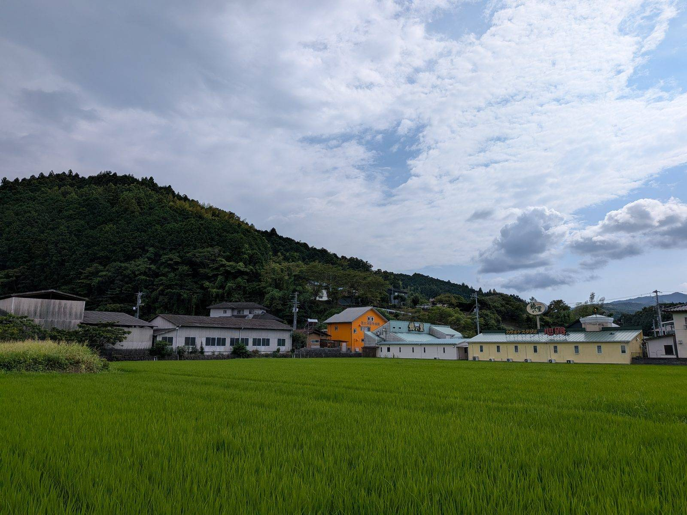

大洲の視点 ・ 出典: 大洲市「国土調査の実施状況」/国土交通省 令和８年６月26日報道発表/愛媛県「県内地籍調査実施状況」

「地籍調査」という言葉を、聞いたことがあるだろうか。
一筆ごとの土地について、所有者・地番・地目を調べ、境界と面積を測量する調査のことだ。
「土地の戸籍」とも呼ばれている。国土調査法が制定された昭和26年から続いていて、今年で75年になる。
大洲市の進捗率は83.01％。全国平均を30ポイント上回っている。
調べ始める前は「どうせ地味な数字だろう」と思っていた。実際は、大洲市がかなり進んでいる側にいて、しかも県内では遅れている側にいる、という妙な位置にあった。
市の「国土調査の実施状況」ページ（令和８年６月11日更新）によると、令和７年度末時点の内訳はこうなっている。
| 項目 | 面積 |
|---|---|
| 調査対象面積 | 432.22ｋｍ² |
| 地籍調査等実施済面積 | 355.04ｋｍ² |
| 19条５項指定面積 | 3.75ｋｍ² |
| 合計実施済面積 | 358.79ｋｍ² |
| 進捗率 | 83.01％ |
「19条５項指定面積」というのは市のページに説明があった。土地に関する様々な測量・調査の成果が、国土調査と同等以上の精度または正確さを有する場合に、国土調査法第19条第５項に基づいて国が指定した区域のことだ。
区画整理などで既に精密な測量が済んでいる土地は、改めて調査しなくてよい、という扱いになる。
検算しておく。355.04＋3.75＝358.79ｋｍ²。358.79÷432.22＝0.8301。83.01％で合っている。
ちなみに調査対象面積の432.22ｋｍ²は、大洲市の総面積432.12ｋｍ²（令和６年10月１日、大洲市統計書）とほぼ同じだ。
全国の「地籍調査対象地域」は国有林野と公有水面を除いた面積なので、大洲市にはその種の土地がほとんどないということになる。裏を返せば、他の自治体と比べるときに分母がずれにくい。
大洲市が調査を始めたのは昭和41年度（1966年度）。今は「第７次国土調査事業十箇年計画」（令和２～11年度）のもとで進めている。60年かけて83％である。
比較する相手を、年度をそろえて用意した。国土交通省が令和８年６月26日に公表した最新の報道発表資料には、令和７年度末時点の全国データが載っている。大洲市の数字と同じ時点だ。
| 区分 | 対象面積 | 令和７年度末の進捗率 |
|---|---|---|
| 全国 合計 | 287,966ｋｍ² | 53％ |
| うちDID（人口集中地区） | 12,673ｋｍ² | 27％ |
| うち宅地 | 19,453ｋｍ² | 52％ |
| うち農用地 | 77,690ｋｍ² | 71％ |
| うち林地 | 178,150ｋｍ² | 47％ |
| 愛媛県 合計 | 5,286.82ｋｍ² | 83.0％ |
| うちDID | 152.70ｋｍ² | 41％ |
| うち宅地 | 230.58ｋｍ² | 72％ |
| うち農用地 | 1,030.69ｋｍ² | 85％ |
| うち林地 | 3,872.85ｋｍ² | 85％ |
| 大洲市 | 432.22ｋｍ² | 83.01％ |
大洲市の83.01％は、全国の53％を30ポイント上回る。ただし愛媛県全体の83.0％とは、ほぼ同じである。
内訳を見ると、なぜ愛媛県が高いのかが分かる。林地の進捗率が全国47％に対して愛媛県は85％。38ポイントの差がある。
林地は面積が圧倒的に大きい（全国の対象面積287,966ｋｍ²のうち178,150ｋｍ²）ので、ここが進んでいる県は全体の数字も高く出る。
逆に全国・愛媛県ともに最も遅れているのがDID（人口集中地区）で、全国27％、愛媛県でも41％にとどまる。
市街地がいちばん進まない。理由は想像がつく。土地の価値が高く、権利関係が複雑で、隣同士の境界に１ｃｍの争いが起きる場所ほど、調査は進まない。
令和７年度の全国の実績は594ｋｍ²で、前年度の623ｋｍ²を下回った。
それでも令和２年度から令和７年度までの６年間の実績は4,348ｋｍ²になる。
第７次計画期間中の進捗率の伸びは、全国平均で２ポイントだった。年0.3ポイントほどしか動かない事業である。
国土交通省の資料には、進捗を後押ししている具体的な手法が２つ挙げられていた。どちらも最近導入されたものだ。
とくに２つ目が重い。地籍調査が進まない最大の理由は、所有者が見つからない、あるいは連絡しても返事がないことだ。
令和７年度は、林地の現地調査の６割で「返事がないので、みなしで確認した」という手続きが使われている。
それだけ所有者不明・連絡不能の土地が多いということでもある。
国土交通省は令和８年６月２日に「３ヶ年加速化施策パッケージ」も公表し、第７次計画の期末（令和11年度）に向けて集中的に取り組むとしている。
ここが今回いちばん意外だったところだ。
愛媛県のページによると、県全体の進捗率は83.0％で、全国９位。
大洲市の83.01％と、ほぼ同じである。大洲市は「県内で特に進んでいる」わけではなく、ちょうど県平均だった。
さらに、県内20市町の状況を見ると構図が変わる。令和８年４月１日時点で、完了11市町、実施中８市町、休止中１市町。
| 状況 | 市町 |
|---|---|
| 完了（11） | 八幡浜市、伊予市、西予市、東温市、久万高原町、砥部町、内子町、伊方町、松野町、鬼北町、愛南町 |
| 実施中（８） | 松山市、今治市、宇和島市、新居浜市、西条市、大洲市、四国中央市、松前町 |
| 休止中（１） | 上島町 |
県内で半数以上の市町が、すでに調査を完了している。隣の内子町も、西予市も、八幡浜市も終わっている。大洲市はまだ実施中で、残り17％が未調査だ。
県平均の83.0％が高く出ているのは、完了した11市町が100％として計算されているからで、実施中の８市町だけを見れば、大洲市の83.01％は決して低くないとも言える。
それでも「県内では終わっていないほうのグループにいる」というのは事実だ。
「全国平均を30ポイント上回る」と「県内では完了していない側」が、同時に成り立っている。
比べる相手を変えると評価が反転する、という分かりやすい例だと思う。
では、なぜ大洲市は60年かけても終わらないのか。市のページにも県のページにも理由の記載はなかったので、着手年度から考えるしかない。
愛媛県の一覧には、市町ごとの着手年度と完了年度が載っている。
大洲市の着手は昭和41年。ほぼ同じ時期に始めた自治体を並べてみた。
| 市町 | 着手年度 | 完了年度 | 要した年数 |
|---|---|---|---|
| 鬼北町 | 昭和38年 | 昭和63年 | 25年 |
| 愛南町 | 昭和38年 | 昭和59年 | 21年 |
| 松野町 | 昭和40年 | 昭和53年 | 13年 |
| 大洲市 | 昭和41年 | 未完了 | 60年経過 |
| 久万高原町 | 昭和43年 | 平成２年 | 22年 |
| 内子町 | 昭和45年 | 平成14年 | 32年 |
| 砥部町 | 昭和47年 | 昭和60年 | 13年 |
| 伊方町 | 昭和47年 | 昭和59年 | 12年 |
大洲市の１年前に始めた松野町は13年で終わっている。もっとも、完了した11市町のうち９つは町であり、規模がまるで違う。
実施中の８市町は松山市・今治市・宇和島市・新居浜市・西条市・大洲市・四国中央市・松前町で、松前町を除けばすべて市だ。
市町村合併で区域が広がったことも、完了を遠ざけていると考えられる。
大洲市は平成17年に旧大洲市・長浜町・肱川町・河辺村が合併している。
面積で説明できるかも試したが、うまくいかなかった。西予市（約514ｋｍ²）も久万高原町（約584ｋｍ²）も大洲市（432ｋｍ²）より広いのに、どちらも完了している。「広いから遅い」という単純な話ではない。
山林の比率も同じだ。大洲市統計書によると、大洲市の総面積432.12ｋｍ²のうち林野面積は315.15ｋｍ²で、73％が山林である。
ただし愛媛県全体の林地の進捗率は85％で、全国の47％を大きく上回っている。
愛媛県は山林の調査がむしろ得意な県だ。「山が多いから遅れている」も、県内では説明にならない。
結局、なぜ大洲市だけ60年かかっているのかは分からなかった。
市の資料に未調査地区の具体名や今後の予定は書かれておらず、残り17％がどこなのかも分からない。市に直接聞かないと出てこない情報だと思う。
進捗率の話ばかりしてきたが、そもそもこれが進んでいると何が変わるのか。
国土交通省の地籍調査Webサイトと報道発表資料に、効果が整理されている。
大洲市にとって、１つ目の意味はとくに大きい。平成30年７月豪雨では市街地の約1,372ｈａが浸水し、建物被害は愛媛県内で最多の2,073棟だった。
大規模な災害復旧を経験した自治体にとって、境界が確定しているかどうかは机上の話ではない。
逆に、地籍調査が進まない要因として同サイトが挙げているのは、財政や職員体制の制約から調査が後回しになりがちだという点だ。
１年で数ｋｍ²しか進まない事業に、毎年予算と人を張り続けられるかどうかという話になる。
地味な数字だと思って開いたら、「比べる相手で評価が変わる」という典型例だった。
全国と比べれば30ポイント上。県平均とはほぼ同じ。県内20市町の中では、まだ終わっていない８市町のひとつ。どれも同じ83.01％という数字から出てくる。
それでも、昭和41年から60年間、市の職員が毎年少しずつ測り続けて83％まで来た、という事実は残る。
１年で数ｋｍ²ずつしか進まない仕事を、担当者が何代も入れ替わりながら続けてきた結果だ。
成果は法務局の地図になり、オープンデータとして誰でも見られる形で残っている。
残り17％がどこなのかは、市の公表資料からは分からなかった。
次に何か大きな災害が起きたとき、その17％に入っている地域と入っていない地域で、復旧の速さに差が出る。
そう思うと、この数字は思ったより自分に関係のある数字だった。